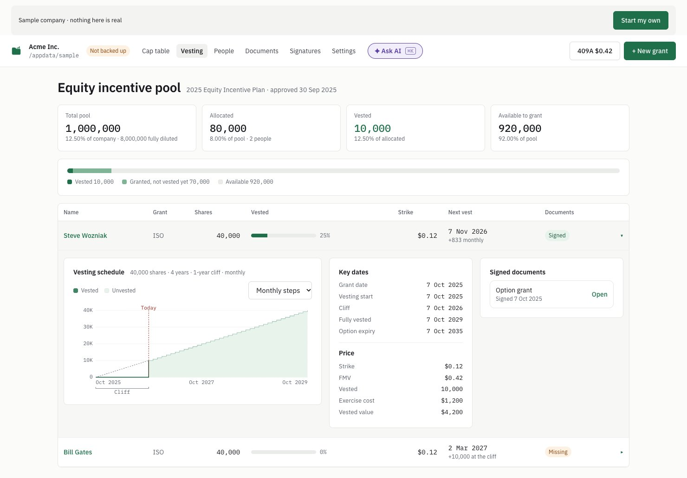
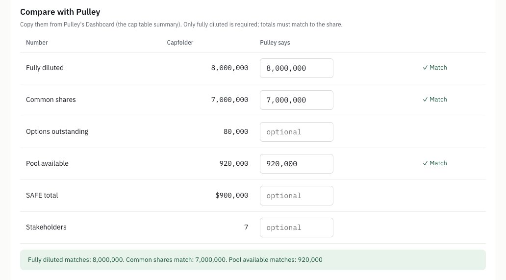
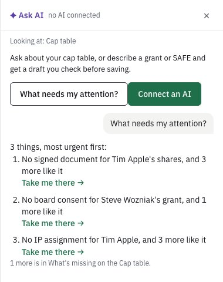

A 5-post thread. Each post ≤280 characters, a screenshot on posts 1–4, the link only in the first reply.
Before you post
Weekdays, morning or midday.
Post the thread, then the link as a reply to post 1.
0–1 hashtags (none used here).
Reply to every comment in the first hour: replies count most.
Post 1222/280 chars
See who owns what, and when.
Capfolder 0.1.4 adds a Vesting screen: the option pool at a glance, and a row per grant that opens to its graph. The cliff, the monthly steps, today, and where vesting stops if someone leaves.

Alt text: Capfolder's Vesting screen on the sample company: cards for the 1,000,000-share option pool, 80,000 allocated, 10,000 vested, 920,000 available, and Steve Wozniak's grant opened to its vesting graph with the cliff and today marked, key dates and his signed option grant. · Download image
Post 2164/280 chars
Click a name and the 3 numbers people ask about sit right next to it: vested, next vest, fully vested.
Graph on the left, the holding and its history on the right.
Alt text: Tim Apple's page in Capfolder: 3,000,000 of 4,000,000 vested, next vest 83,333 shares, fully vested Oct 2027 next to his name; his vesting graph on the left; his shares and their history on the right. · Download image
Post 3161/280 chars
Moving from Pulley, Carta or Cake? Type in the old tool's totals and Capfolder checks them to the share.
More vested than granted in the file? The import stops.

Alt text: The Compare with Pulley step of Capfolder's import: fully diluted, common shares and pool available typed in from Pulley each show Match; options outstanding, SAFE total and stakeholders are optional. · Download image
Post 4167/280 chars
New in Ask AI: "What needs my attention?"
Up to 3 things to do next, each with a Take me there button. It's plain code, not a model, so it works with no AI connected.

Alt text: Capfolder's Ask AI panel with no AI connected, answering What needs my attention? with three things, most urgent first, each with a Take me there button. · Download image
Post 5167/280 chars
Honest limit: the import check compares totals, not every row. You still check a few people by hand.
Founders: how do you answer "how much of mine has vested?" today?
First reply (the link goes here, not in the posts)161/280 chars
Free, open source, and your cap table stays in a folder on your own computer. What's new in 0.1.4, with screenshots: https://capfolder.com/blog/see-your-vesting/